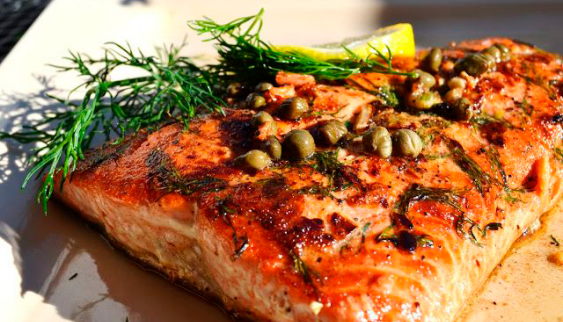

Salmão com Alcaparras

INGREDIENTES
- 1 filé de salmão médio
- Melhor dizendo 1 kg de filé de salmão
- Meio vidro pequeno de alcaparras
- Azeite
- 3 colheres de manteiga com sal
- Suco de 1 limão
- 1 laranja espremida
- Amido de Milho para engrossar o suco da laranja
- Orégano a gosto
- Sal e pimenta - do - reino a gosto
MODO DE PREPARO
- Tempere os filés de salmão com o sal, pimenta - do - reino, o suco de limão e orégano a gosto.
- Reserve
- Aqueça em uma frigideira 2 colheres de manteiga.
- Frite os filés dos dois lados, rapidamente, só para que fiquem selados.
- Acomode - os em um refratário.
- Reserve.
- Com papel absorvente, seque as alcaparras muito bem.
- Na frigideira que foi utilizada para fritar os filés, junte o azeite.
- Frite as alcaparras já secas, até que elas se abram.
- Coloque - as no molho da conserva.
- Jogue tudo sobre os filés que estão no refratário.
- Leve ao forno por 10 minutos.
- Sirva com arroz branco.